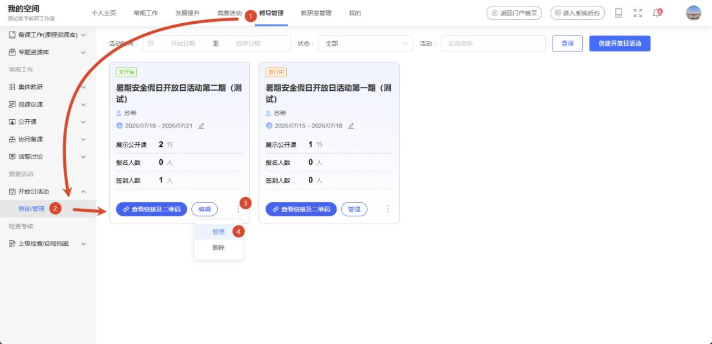
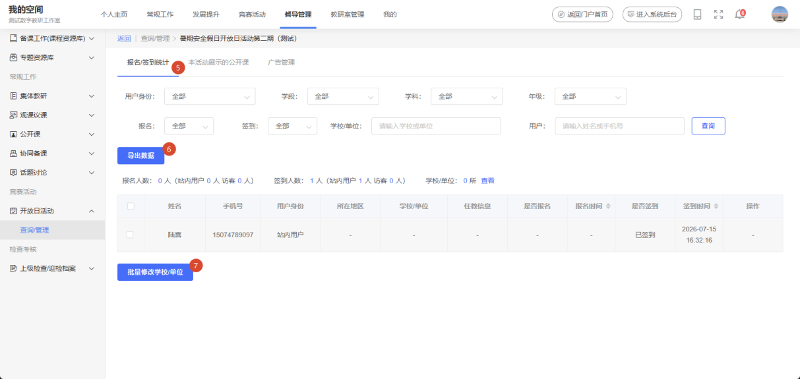
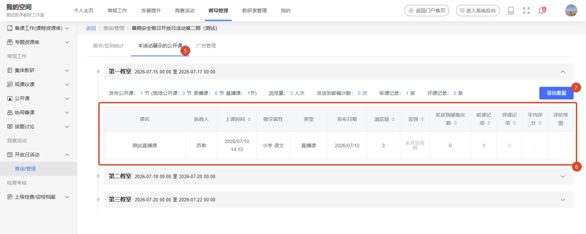
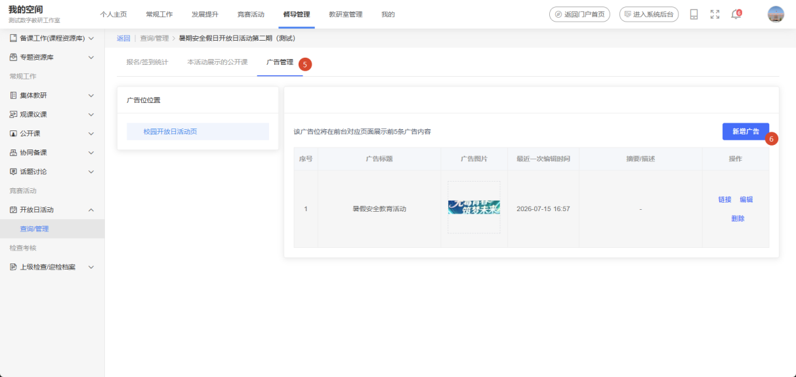
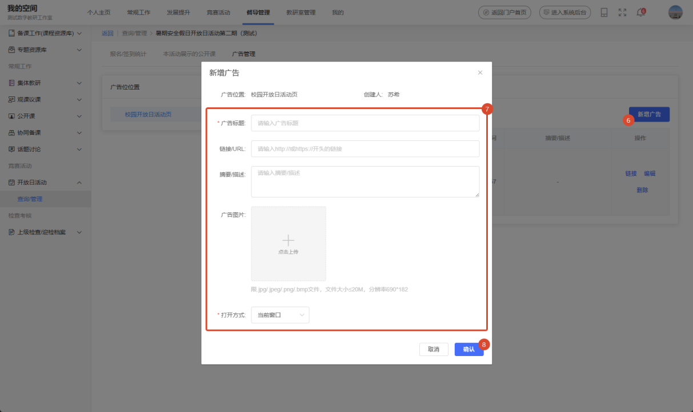
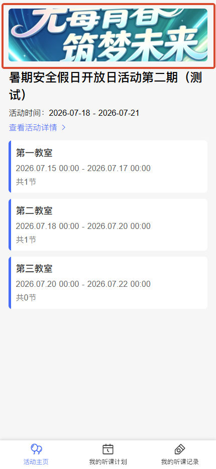
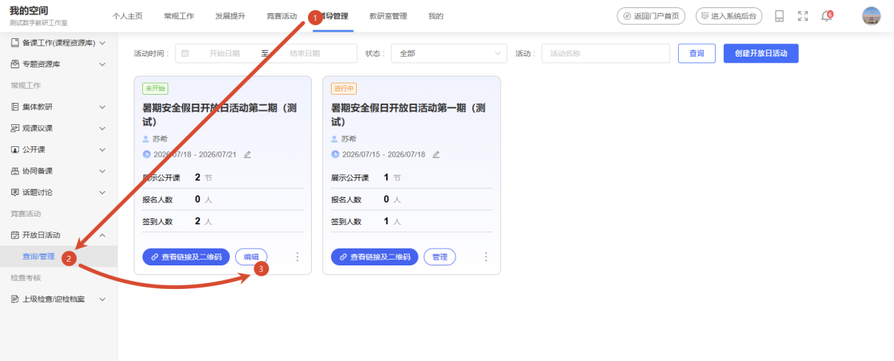
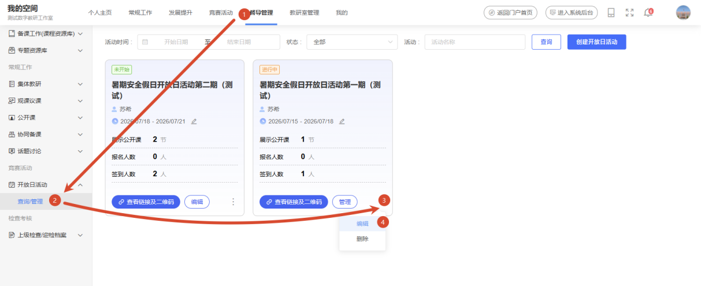
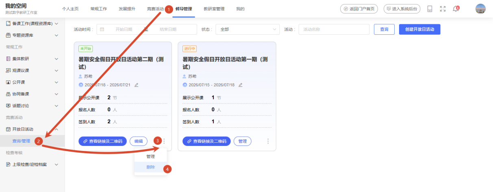
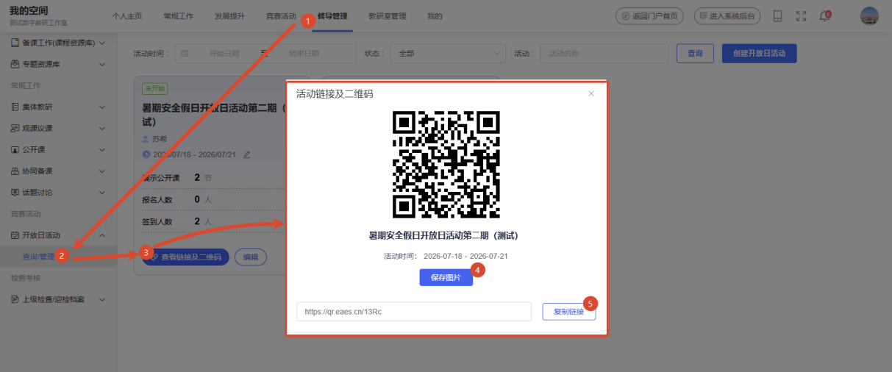

1. 查看报名/签到统计
进入工作空间，选择【督导管理→开放日活动→查询/管理】，进入开放日活动列表，鼠标悬停至开放日活动卡片【︙】图标展开管理功能，选择【管理】进入开放日活动管理模块。

在开放日活动管理模块，选择【报名/签到统计】栏目，即可查看该开放日活动用户报名与签到数据与统计。

筛选条件，支持根据“用户身份、学段、学科、年级、报名、签到、学校/单位”等多维度字段查询筛选报名/签到用户。
点击【导出数据】，支持在线导出报名/签到用户，以Excel 格式文件导出。
点击【批量修改学校/单位】，支持批量修改非工作室成员（访客）用户学校/单位信息。
2. 查看活动展示的公开课
进入工作空间，选择【督导管理→开放日活动→查询/管理】，进入开放日活动列表，鼠标悬停至开放日活动卡片【︙】图标展开管理功能，选择【管理】进入开放日活动管理模块。
在开放日活动管理模块，选择【本活动展示的公开课】栏目，即可查看添加至开放日活动的公开课课程签到、听课、评课数据。

点击课程列表右上角【导出数据】按钮，支持在线导出课程签到、听课、评课数据；以Excel 格式文件导出。
3. 设置推荐信息
进入工作空间，选择【督导管理→开放日活动→查询/管理】，进入开放日活动列表，鼠标悬停至开放日活动卡片【︙】图标展开管理功能，选择【管理】进入开放日活动管理模块。
在开放日活动管理模块，选择【广告管理】栏目，即可管理该开放日活动广告内容；点击【新增广告】按钮。

在编辑广告内容表单，根据表单填写规则与要求完成开放日活动广告信息，点击【确认】按钮即可完成开放日活动广告内容添加。

同时，该页面支持对已添加的广告内容进行“预览、编辑、删除”等管理操作。
点击【链接】，支持在线预览广告内容跳转地址。
点击【编辑】，支持再次编辑该广告内容。
点击【删除】，支持删除该广告内容。
已添加的开放日活动广告内容会显示在该活动移动端主页。

4. 编辑/删除开放日活动
编辑开放日活动进入工作空间，依次选择 【督导管理→开放日活动→查询/管理】 进入活动列表页；在目标活动卡片上点击 【编辑】按钮，即可进入该开放日活动的修改编辑页面。

当开放日活动状态为“未开始”时，活动卡片上会直接显示 【编辑】 按钮，点击即可直达修改编辑页面。
当开放日活动状态为“进行中”或“已结束”时，需将鼠标悬停在活动卡片的 【︙】 图标上，在展开的管理菜单中选择 【编辑】，即可进入修改编辑页面。

删除开放日活动被删除的开放日活动将无法恢复，请谨慎操作。
进入工作空间，依次选择【督导管理→开放日活动→查询/管理】 进入活动列表页；将鼠标悬停在目标活动卡片的【︙】 图标上，在展开的菜单中点击 【删除】 即可完成操作。

5. 分享开放日活动
进入工作空间，选择【督导管理→开放日活动→查询/管理】进入开放日活动列表，点击开放日活动卡片【查看链接及二维码】按钮，弹出活动链接及二维码窗口。

点击【保存图片】，可下载开放日活动二维码至本地，再分享活动二维码。
点击【复制链接】，可直接复制开放日活动地址进行分享。
开放日活动是支持非工作室成员扫码参与的；以访客的身份参与听课、评课。